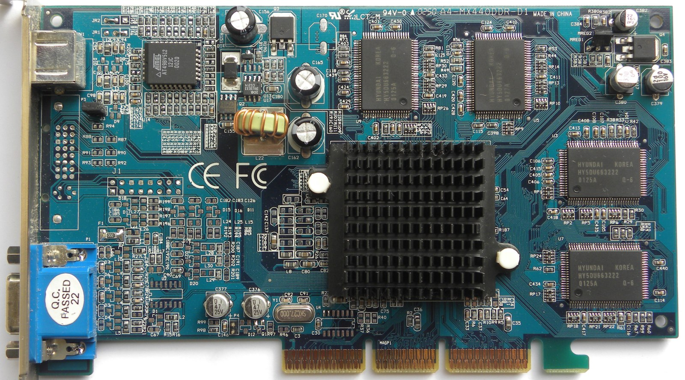
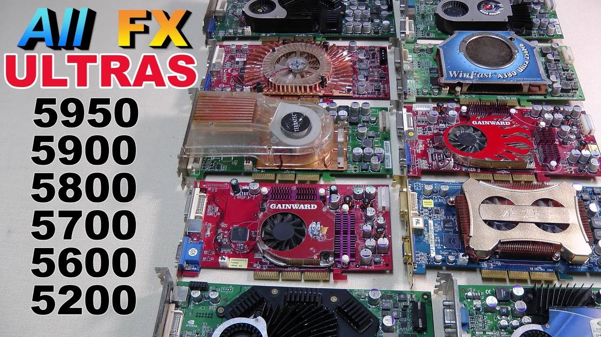
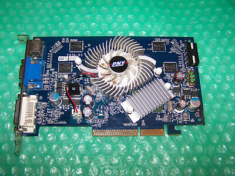
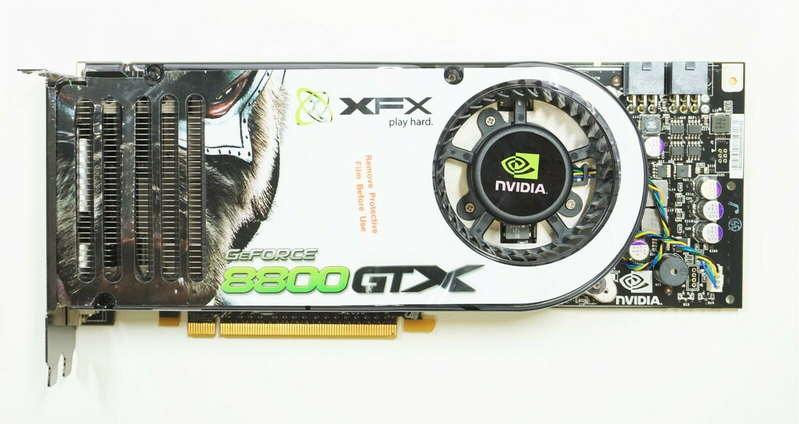

(All pictures are from ebay and amazon)
The term was popularized by Nvidia in 1999, who marketed the GeForce 256 as "the world's first GPU".
Launched on September 1, 1999, the GeForce 256 (NV10) was the first consumer-level PC graphics chip shipped with hardware transform, lighting, and shading although 3D games utilizing this feature did not appear until later. Initial GeForce 256 boards shipped with SDR SDRAM memory, and later boards shipped with faster DDR SDRAM memory.
Launched in April 2000, the first GeForce2 (NV15) was another high-performance graphics chip. Nvidia moved to a twin texture processor per pipeline (4x2) design, doubling texture fillrate per clock compared to GeForce 256. Later, Nvidia released the GeForce2 MX (NV11), which offered performance similar to the GeForce 256 but at a fraction of the cost. The MX was a compelling value in the low/mid-range market segments and was popular with OEM PC manufacturers and users alike. The GeForce 2 Ultra was the high-end model in this series.
aunched in February 2001, the GeForce3 (NV20) introduced programmable vertex and pixel shaders to the GeForce family and to consumer-level graphics accelerators. It had good overall performance and shader support, making it popular with enthusiasts although it never hit the midrange price point. The NV2A developed for the Microsoft Xbox game console is a derivative of the GeForce 3.
Launched in February 2002, the then-high-end GeForce4 Ti (NV25) was mostly a refinement to the GeForce3. The biggest advancements included enhancements to anti-aliasing capabilities, an improved memory controller, a second vertex shader, and a manufacturing process size reduction to increase clock speeds. Another member of the GeForce 4 family, the budget GeForce4 MX, was based on the GeForce2, with the addition of some features from the GeForce4 Ti. It targeted the value segment of the market and lacked pixel shaders. Most of these models used the AGP 4× interface, but a few began the transition to AGP 8×.
Launched in 2003, the GeForce FX (NV30) was a huge change in architecture compared to its predecessors. The GPU was designed not only to support the new Shader Model 2 specification but also to perform well on older titles. However, initial models like the GeForce FX 5800 Ultra suffered from weak floating point shader performance and excessive heat which required infamously noisy two-slot cooling solutions. Products in this series carry the 5000 model number, as it is the fifth generation of the GeForce, though Nvidia marketed the cards as GeForce FX instead of GeForce 5 to show off "the dawn of cinematic rendering".
Launched in April 2004, the GeForce 6 (NV40) added Shader Model 3.0 support to the GeForce family, while correcting the weak floating point shader performance of its predecessor. It also implemented high dynamic range imaging and introduced SLI (Scalable Link Interface) and PureVideo capability (integrated partial hardware MPEG-2, VC-1, Windows Media Video, and H.264 decoding and fully accelerated video post-processing).
The seventh generation GeForce (G70/NV47) was launched in June 2005 and was the last Nvidia video card series that could support the AGP bus. The design was a refined version of GeForce 6, with the major improvements being a widened pipeline and an increase in clock speed. The GeForce 7 also offers new transparency supersampling and transparency multisampling anti-aliasing modes (TSAA and TMAA). These new anti-aliasing modes were later enabled for the GeForce 6 series as well. The GeForce 7950GT featured the highest performance GPU with an AGP interface in the Nvidia line. This era began the transition to the PCI-Express interface. A 128-bit, 8 ROP variant of the 7950 GT, called the RSX 'Reality Synthesizer', is used as the main GPU in the Sony PlayStation 3.
Released on November 8, 2006, the eighth-generation GeForce (originally called G80) was the first ever GPU to fully support Direct3D 10. Manufactured using a 90 nm process and built around the new Tesla microarchitecture, it implemented the unified shader model. Initially just the 8800GTX model was launched, while the GTS variant was released months into the product line's life, and it took nearly six months for mid-range and OEM/mainstream cards to be integrated into the 8 series. The die shrink down to 65 nm and a revision to the G80 design, codenamed G92, were implemented into the 8 series with the 8800GS, 8800GT and 8800GTS-512, first released on October 29, 2007, almost one whole year after the initial G80 release.
The first product was released on February 21, 2008. Not even four months older than the initial G92 release, all 9-series designs are simply revisions to existing late 8-series products. The 9800GX2 uses two G92 GPUs, as used in later 8800 cards, in a dual PCB configuration while still only requiring a single PCI-Express 16x slot. The 9800GX2 utilizes two separate 256-bit memory busses, one for each GPU and its respective 512 MB of memory, which equates to an overall of 1 GB of memory on the card (although the SLI configuration of the chips necessitates mirroring the frame buffer between the two chips, thus effectively halving the memory performance of a 256-bit/512MB configuration). The later 9800GTX features a single G92 GPU, 256-bit data bus, and 512 MB of GDDR3 memory.Prior to the release, no concrete information was known except that the officials claimed the next generation products had close to 1 TFLOPS processing power with the GPU cores still being manufactured in the 65 nm process, and reports about Nvidia downplaying the significance of Direct3D 10.1.[7] In March 2009, several sources reported that Nvidia had quietly launched a new series of GeForce products, namely the GeForce 100 Series, which consists of rebadged 9 Series parts. GeForce 100 series products were not available for individual purchase.